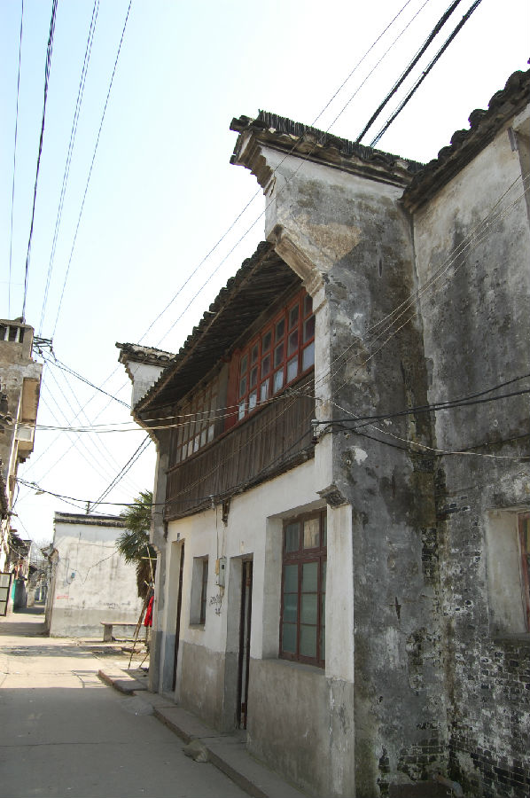

嘉兴市文物保护网 · 市级文物保护点 · 2020-11-06 · 原文

解放街李氏老宅位于嘉兴市王店镇解放街202号市河南侧，据房主介绍，建于民国。坐北朝南，原布局不明，现仅存两进和一天井，占地面积128平方米。一进两层，通面阔6.88米，进深6.5米，砖木结构，穿斗式，梁架较粗大并且有细致的雕工，天井两侧有走马堂楼，二进两层通面阔6.88米，进深6.5米，屋顶为硬山顶，房屋两侧有风火墙，屋内地面用青砖铺设，天井内青石板铺地。该古建筑雕工精美，在嘉兴现在的乡土建筑中属精品，具有较高的历史和文物价值。2010年公布为嘉兴市文物保护点。